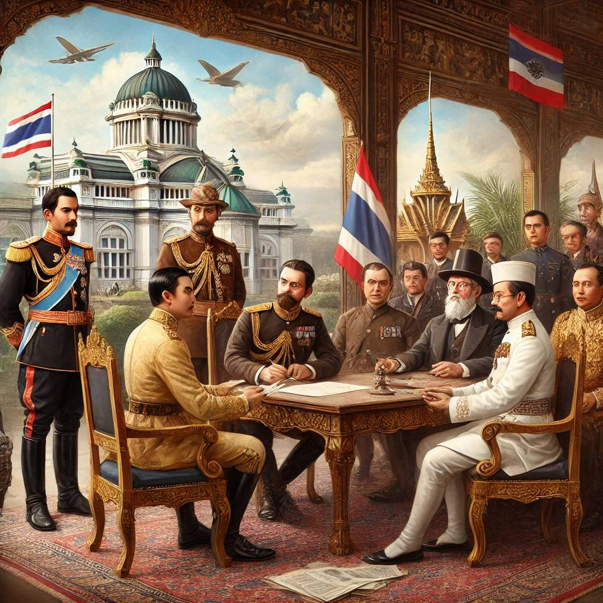
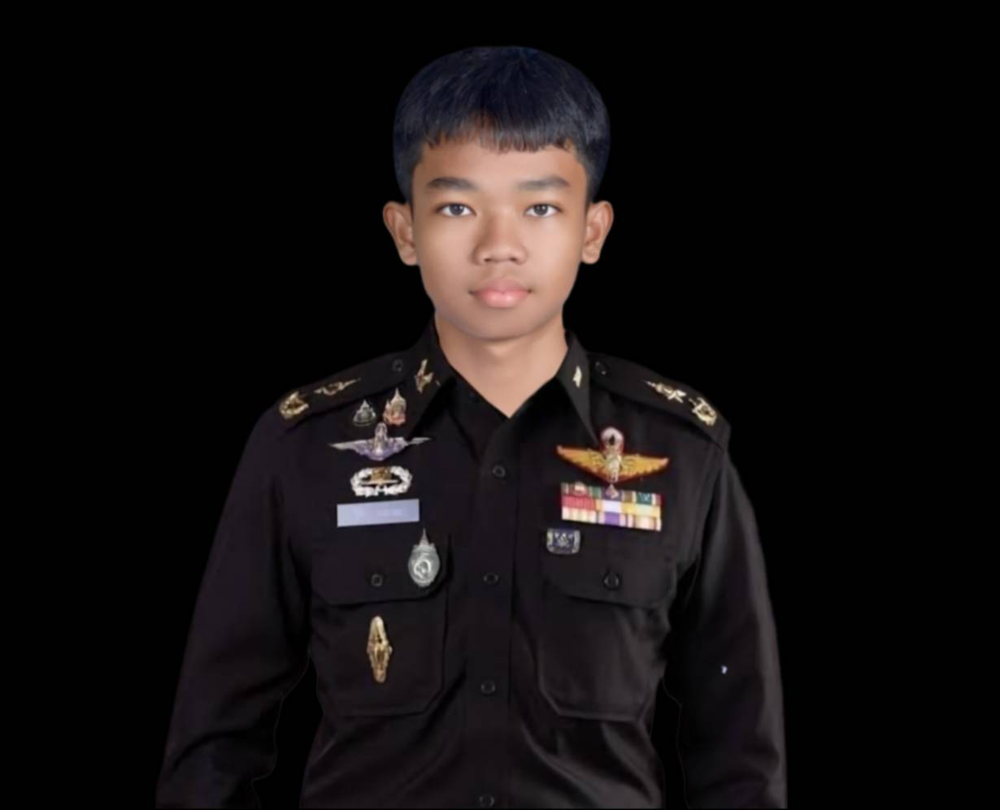
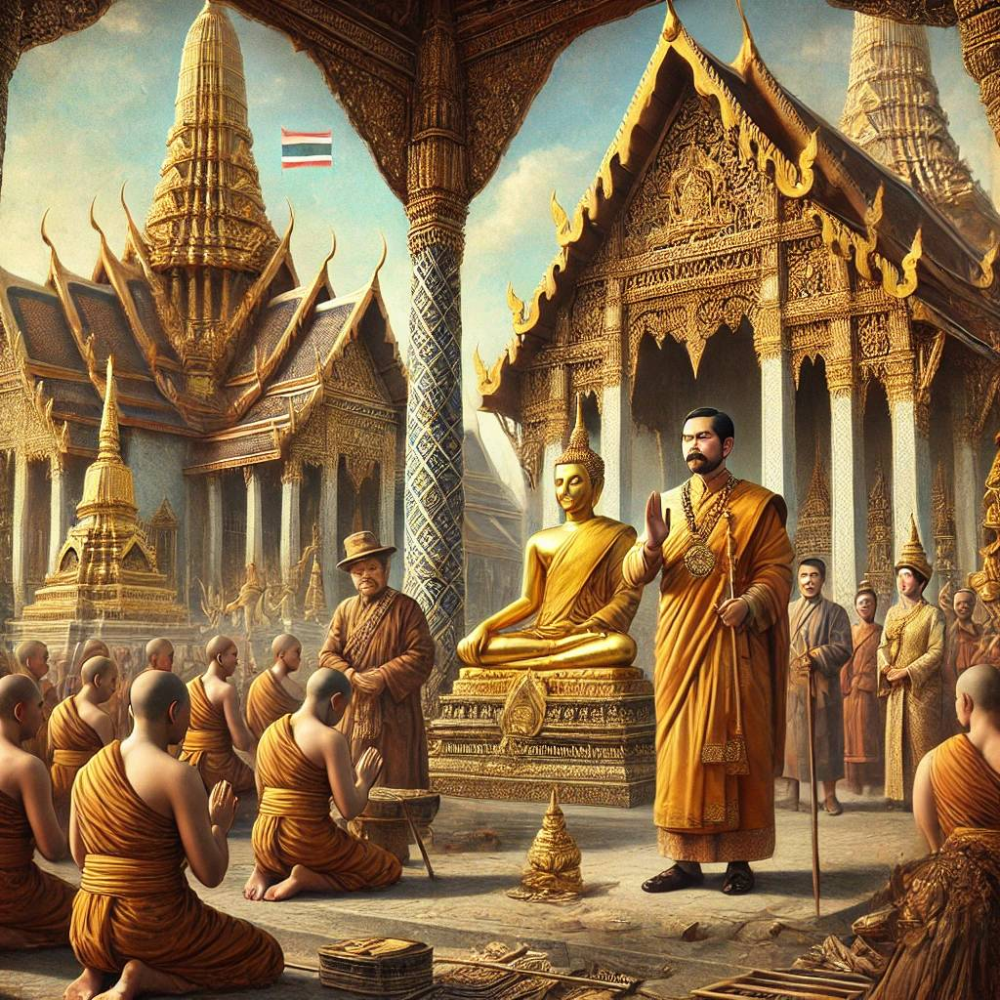
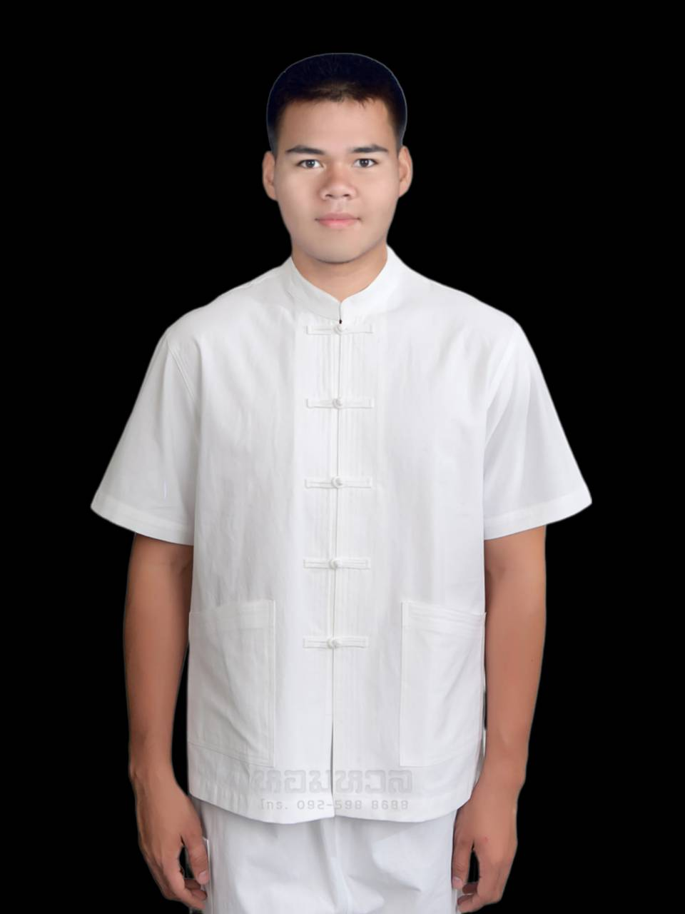
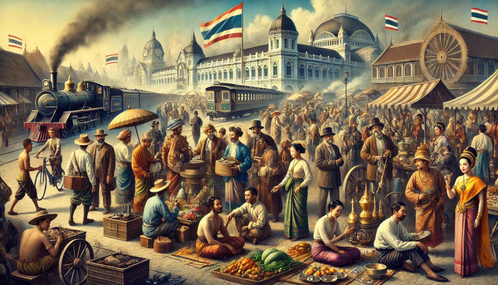
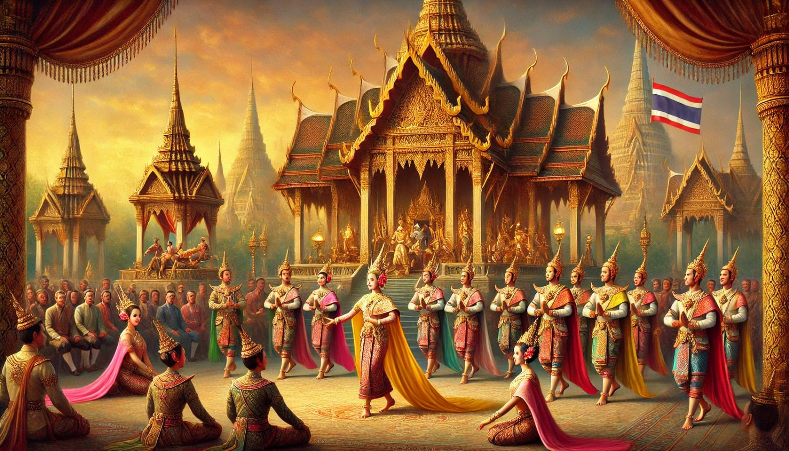
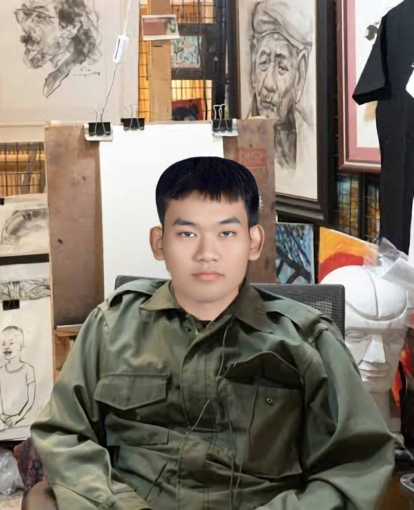

พระบาทสมเด็จพระจุลจอมเกล้าเจ้าอยู่หัว (รัชกาลที่ 5) ทรงปฏิรูปการปกครองและสังคมหลายด้าน เช่น การพัฒนาการศึกษา การประดิษฐ์กฎหมายใหม่ๆ และการเจรจากับประเทศตะวันตกเพื่อรักษาอธิปไตยของไทย ทรงมีบทบาทสำคัญในการเปลี่ยนแปลงประเทศไทยเข้าสู่ยุคสมัยใหม่.
1. ด้านการป้องกันและรักษาเอกราช


- ด้านแม่ทัพ: พระองค์ทรงเป็นแม่ทัพที่มีความเชี่ยวชาญทางยุทธศาสตร์ ทรงบริหารงานทัพด้วยความระมัดระวัง และสามารถรักษาอธิปไตยของประเทศในช่วงเวลาที่ประเทศไทยตกอยู่ในความเสี่ยงจากอำนาจต่างชาติ โดยเฉพาะการปฏิรูปการทหารให้ทันสมัยตามแบบตะวันตก
- ดำเนินนโยบายทางการเมืองการทูต: พระองค์ใช้การทูตเพื่อรักษาเอกราชของชาติในช่วงที่ประเทศต่างๆ ในเอเชียกำลังตกอยู่ในอำนาจอาณานิคม พระองค์ทรงมีบทบาทสำคัญในการรักษาความเป็นกลางของประเทศ และดำเนินการเปิดการเจรจาต่อรองเพื่อรักษาความเป็นอิสระ
2. ด้านการทำนุบำรุงพระพุทธศาสนา


- การปฏิบัติตนเป็นแบบอย่าง: พระองค์ทรงยึดมั่นในหลักธรรมของพระพุทธศาสนาและทรงเป็นแบบอย่างในการปฏิบัติธรรม ไม่เพียงแค่การปฏิบัติด้วยตัวเอง แต่ยังเป็นผู้นำในการสนับสนุนการศึกษาพระธรรมในหมู่พุทธศาสนิกชน
- การเผยแพร่พระพุทธศาสนา: ส่งเสริมการเรียนรู้และการเผยแผ่พระพุทธศาสนา โดยพระองค์ได้ทรงจัดตั้งโครงการเผยแพร่การศึกษาพระธรรมทั้งในประเทศและต่างประเทศ รวมถึงการส่งพระสงฆ์ไปศึกษาและเผยแผ่พระพุทธศาสนาในต่างประเทศ
3. ด้านการส่งเสริมเศรษฐกิจ

- สนับสนุนการเกษตร: พระองค์ทรงสนับสนุนการพัฒนาการเกษตรในประเทศ โดยได้ทรงสร้างการปฏิรูปทางการเกษตรเพื่อเพิ่มผลผลิตและลดปัญหาความยากจนของเกษตรกร ผ่านโครงการต่างๆ เช่น การพัฒนาการเพาะปลูกพืชเศรษฐกิจ เช่น ข้าว และยางพารา
- ด้านการค้า: เปิดโอกาสทางการค้าให้กว้างขวางขึ้น โดยทรงพัฒนาการค้าขายกับต่างประเทศ ซึ่งรวมถึงการยกเลิกข้อบังคับทางการค้าที่จำกัดการค้า และการส่งเสริมการตั้งโรงงานผลิตในประเทศ
4. ด้านศิลปวัฒนธรรม


- สร้างสรรค์ด้วยพระองค์เอง: ทรงมีส่วนร่วมในงานศิลปะและวัฒนธรรมไทย โดยเฉพาะการสถาปนาความเจริญรุ่งเรืองในงานศิลปะและสถาปัตยกรรมที่สะท้อนถึงความเป็นไทย พระองค์ทรงมีพระราชดำริให้สร้างงานศิลปะและสถาปัตยกรรมที่แสดงถึงเอกลักษณ์ของไทย เช่น พระบรมมหาราชวังและพระที่นั่งต่างๆ
- สนับสนุนศิลปินแขนงต่างๆ: ทรงส่งเสริมศิลปินและผู้สร้างสรรค์งานศิลปะ ไม่ว่าจะเป็นด้านการวาดภาพ การประดิษฐ์หรือการแสดง ศิลปินที่ได้รับการสนับสนุนจากพระองค์สามารถมีบทบาทในการสร้างสรรค์งานศิลปะที่สำคัญสำหรับประเทศไทย